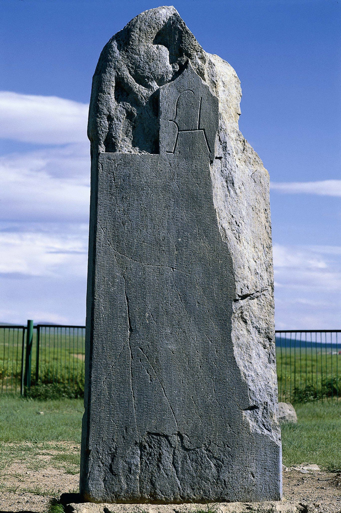

Orhun Yazıtları
Orhun Yazıtları, Orhun Abideleri veya Göktürk Yazıtları; Türkler'in bilinen ilk alfabesi olan Göktürk Alfabesi ile eski Türkçe yazılı 4 adet dikili anıt taştan oluşur. Bu yazılı taşlar Moğolistan'dadır. Yazıtların ikisi, Bilge Kağan ve Költiğin Yazıtı, Karakurum şehri yakınlarındaki Orhun Irmağı kıyısındadır ve bu nedenle "Orhun Yazıtları" diye bilinirler. Diğer ikisi ise Ulan Batur şehri Nalaikh kasabası yakınlarında bulunan Bilge Tonyukuk Yazıtları'dır.
Not: Bilge Kağan ve Költiğin Yazıtları, TİKA tarafından 2008 yılında bulundukları yerde inşa edilen müzede korumaya alınmışlar ve halen bu müzede sergilenmektedirler. Bilge Tonyukuk Yazıtları ise, halen bulundukları yerde dikili duran yazıtların çevresine müze yapılarak korumaya alınacaklardır. Yine TİKA tarafından yapılan bu müzenin inşaatı 2022 yılı Kasım ayında başlamıştır.

Orhun Yazıtları Nedir?
Orhun Yazıtları, üzerinde Türkçe yazılar olan dört büyük anıt taşlardır. Bu taşlardaki yazılar Türk dilinin ve Türk tarihinin en eski yazıları ve en önemli belgeleridir.
Orhun Yazıtları Nerededir?
Moğolistan'da bulunan ve toplam 4 dikili taştan oluşan Orhun yazıtları'nın ikisi Kharkhorin (Karakurum) kasabası yakınında, diğer ikisi de başkent Ulan Batur'un yaklaşık 55 km. doğusunda, Nalaikh (Налайх) kasabası yakınlarında bulunmaktadır. Bu iki bölgenin arasında yaklaşık 450 km. mesafe vardır.
Orhun Yazıtları'na nasıl gidilir?
Moğolistan'da Orhun Yazıtları'na gidebilmenin en iyi yöntemi başkent Ulan Batur'dan araç kiralamakla mümkündür (şöförlü araç da kiralanabilir).
Orhun Irmağı kıyısında bulunan Bilge Kağan ve Kültiğin yazıtlarına gidebilmek için başkent Ulan Batur'dan batıya doğru yaklaşık 380 km. mesafede olan ve 5-6 saat süren Karakurum (Kharkhorin / Хархорин) kasabasına gidilir. Bu kasabanın içinden başlayan "Bilge Kağan Yolu" vardır, yaklaşık 40km. olan bu asfalt yol direkt olarak Orhun Yazıtları müzesine gider. Yaklaşık 12 bin nüfuslu Karakurum kasabasında benzinlik, süpermarket, kalınacak otel ve otağlar bulunur.
Bilge Tonyukuk yazıtlarına gitmek ise daha kolaydır. Başkent Ulan Batur'dan doğuya Nalaikh (Налайх) kasabasına doğru yaklaşık 25km. gidilir, kasabaya girmeden hemen önce Gorodok (Городок) köyü istikametine (sola) sapılır, ve bu yolda yaklaşık 10 km. gidilir, yol üzerindeki Gorodok köyünü 2km. kadar geçince sağda "Bilge Tonyukuk Yolu" yazan ve üzerinde Türk bayrağı olan levhalı bir kavşağa ulaşılır, bu kavşaktan itibaren direkt olarak Tonyukuk yazıtlarına giden asfalt yol yaklaşık 12km. sürer.
- Google harita ile Orhun Yazıtları'nın yeri; Bilge Kağan ve Költiğin, Tonyukuk

Orhun Yazıtları'nı Kim Yazmıştır?
Orhun Yazıtları, 8. asırda Göktürk Devleti'nin hükümdarı olan Bilge Kağan ve onun başveziri Bilge Tonyukuk tarafından yazdırılmış olup, o dönemin Türk devlet idaresi, yaşanan savaşlar, komşu halklar ile ilişkiler, kültürel ögeler ve sosyal yaşam ile ilgili önemli bilgiler içermektedir.
Orhun Yazıtları'nı Kim Keşfetmiştir?
Orhun Yazıtları, 1889 yılında Moğolistan’ın Orhun Vadisi'nde, bölgeyi ziyaret eden Rus kaşif Nikolay Yadrintsev tarafından bulunmuş ve ünlü Rus Türkolog Vasily Radlov tarafından yayınlanarak dünyaya duyurulmuştur. Bulunuşundan Dört yıl sonra, 1893 yılında, Danimarkalı dilbilimci Vilhelm Thomsen tarafından alfabesi çözülerek yazıların eski Türkçe olduğu tespit edilmiş ve aynı yılın 15 Aralık günü Danimarka Kraliyet Bilimler Akademisi'nde bilim dünyasına duyurulmuştur.

Foto: Költiğin Anıtı Orhun Yazıtları'nın bir parçasıdır.

Költiğin Anıtı'ndan dizeler
Grafik: Orhun Yazıtları'nı ilk çözen Danimarka'lı Türkolog Vilhelm Thomsen'in 1893 yılında yayınladığı Inscriptions de L'Orkhon Déchiffrées adlı kitabındaki Göktürk Alfabesi, Orhun ve Yenisey biçimleri ile.